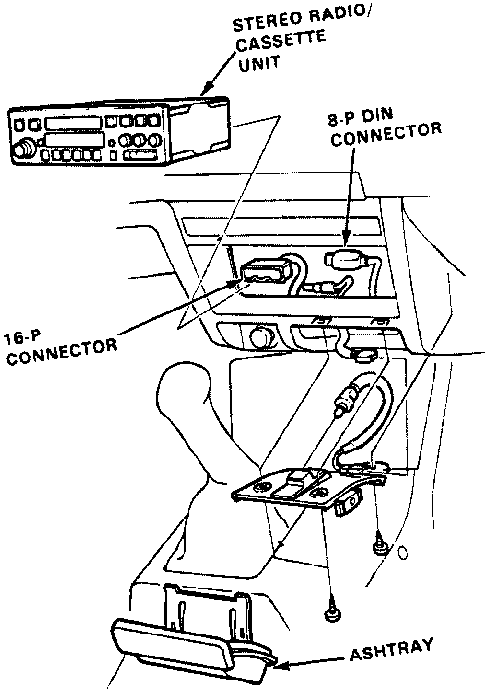

Radio/Stereo: Service and Repair
NOTE: The original radio has a coded theft protection circuit. Be sure to get the customer's code number before- disconnecting the battery.
- removing the radio fuse from the under-hood fuse/relay box.
- removing the radio.
After service, reconnect power to the radio and turn it on. When the word "CODE" is displayed, enter the customer's 5-digit code to restore radio operation.
1. On models equipped with radio coded theft protection system, be sure to get the customer's code number before beginning this procedure.
2. Remove ashtray and ashtray bracket.
3. Remove two lower radio attaching screws.
Fig. 11 Radio Replacement:

4. Push radio out from dash, then disconnect electrical connectors and antenna lead and remove radio, Fig. 11.
5. Reverse procedure to install.
6. After service, reconnect power to the radio and turn it on. When the word "CODE" is displayed, enter the customer's 5-digit code to restore radio operation.